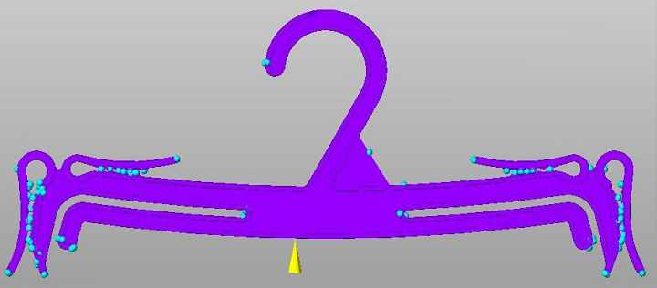

|
4. Birleþme Ýzleri (Weld Line Locations): Birleþme izlerinden daha önce Þekil 16’da bahsedildi. Ýki giriþli tasarýma göre seçilen tek giriþ ve giriþin olduðu yere göre parçada daha az birleþme izi oluþacaðý görülüyor. Ayrýca iki giriþlide parçanýn simetri hattýnda birleþme izi oluþurken, burada birleþme izi oluþmuyor. Bu durum Þekil 16 da gösterilmiþtir.
Birleþme izleri analizi daha çok delikli parçalarda önem kazanmaktadýr.

Þekil 17. Birleþme Ýzleri (Weld Line Locations)
5. Hava kabarcýklarý (Air Bubble Locations): Hava kabarcýklarýnýn nerede oluþtuðunu detaylý bir þekilde gösteriyor. Bu analizi dikkate alarak kalýp içinde gaz tahliyesinin yapýlmasý gereken yerlerin nerelerde olmasý gerektiðini görebiliriz.

Þekil 18. Hava kabarcýklarý (Air Bubble Locations)
6. Plastik Akýþý (Plastic Flow): Plastiðin kalýp içerisinde nasýl bir yol izleyerek dolduðunu simüle edebiliyoruz.
Þekil 19.Plastik Akýþý (Plastic Flow)
7. Dolma Süresi (Fill Time): Saniye mertebesinde gösteriyor. Koyu mavi bölgeler en son dolan yerlerdir.
Þekil 20. Dolma Süresi (Fill Time)
- Çökmeler (Sink Marks Estimate): Kaç milimetre olarak çöktüðünü görebiliyoruz.
Þekil 21. Çökmeler (Sink Marks Estimate)
Çökmeleri bilgisayarýn ekran kartýna baðlý olarak parçanýn neresinde ve ne gibi problemler yaratýðýný görebiliriz.
Þekil 22. Çökmelerin Yaratýðý Görsel Bozukluklar
9. Enjeksiyon Basýncý (Injection Pressure):
Þekil 23. Enjeksiyon Basýncý (Injection Pressure)
10. Akýþkan Akarkenki Sýcaklýðý (Flow Front Temperature): Kalýplama anýnda numune üzerinde oluþan sýcaklýk daðýlýmý gösterilmiþtir.
Þekil 24. Akýþkan Akarkenki Sýcaklýðý (Flow Front Temperature)
11. Basýnç Düþüþü (Pressure Drop): Parçada aþýrý yüklemenin nerede oluþacaðýný “Basýnç Düþüþü” ve “Enjeksiyon Basýncý” sonuçlarýný karþýlaþtýrmalý olarak incelersek bulabiliriz.
Þekil 25. Basýnç Düþüþü (Pressure Drop)
12. Malzeme Yönelmesi (Skin Orientation): Plastiðin izlediði yolu daha detaylý bir þekilde vektörel yönlerle gösteriyor.
Þekil 26. Malzeme Yönelmesi (Skin Orientation)
13. Ortalama sýcaklýða göre “+” ve “–“ bölgeler (Surface Temperature Variance):
Þekil 27. Ortalama sýcaklýða göre “+” ve “–“ bölgeler (Surface Temperature Variance)
14. Zamana baðlý olarak donmanýn ortalama “+” ve “–“ bölgeleri (Freeze Time Variance):
Þekil 28. Zamana baðlý olarak donmanýn ortalama “+” ve “–“ bölgeleri (Freeze Time Variance)
Kaynaklar:
- Gökler, M Ý., Mühendislikte Ýleri Analiz Yöntemlerine Genel Bakýþ, ODTÜ Makine Mühendisliði Bölümü, ODTÜ CAD/CAM Merkezi,
- www.biltim.com - 2008
|